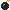

SCORE 000000
CPU 000000
게임 오버
최종 점수
000000
벽돌 속 아이템

폭탄깨지면 펑! 둘레 벽돌까지 부서져요
긴 패들받으면 10초 동안 패들이 길어져요
불꽃 공받으면 6초 동안 벽돌을 뚫고 지나가요
달팽이받으면 8초 동안 공이 느려져요
SCORE 000000
CPU 000000
최종 점수
000000

폭탄깨지면 펑! 둘레 벽돌까지 부서져요
긴 패들받으면 10초 동안 패들이 길어져요
불꽃 공받으면 6초 동안 벽돌을 뚫고 지나가요
달팽이받으면 8초 동안 공이 느려져요